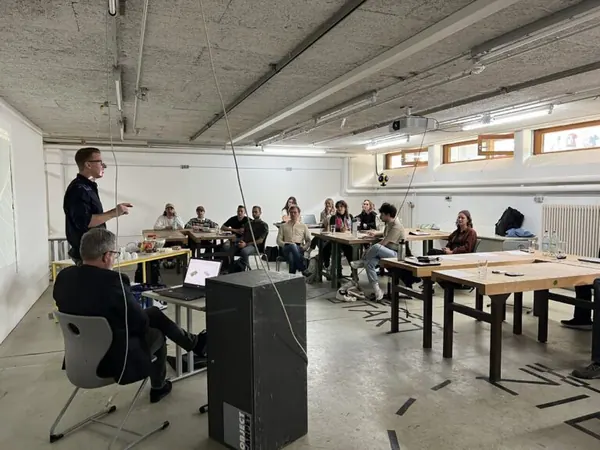

Carl Meinelt Quartier Bamberg: Kreative Köpfe, Innovative Ideen, Gemeinsamer Erfolg! Die Kooperation mit …
TH Rosenheim_ Architektur und Bildung im Einklang
Carl Meinelt Quartier Bamberg: Kreative Köpfe, Innovative Ideen, Gemeinsamer Erfolg!
Die Kooperation mit der IAD TH Rosenheim – Innenarchitektur.Architektur.Design erstreckte sich über etwa ein Jahr und fand gestern Abend mit der Abschlusspräsentation des Projekts/Vertiefungsprojekts „Carl Meinelt Quartier Bamberg“ (kurz CMV Bamberg) vorerst ihren Abschluss. Insgesamt präsentierten rund 20 Studierende in fünf Gruppen ihre entwickelten Konzepte und Ideen in einer spannenden Schlusspräsentation vor einer Jury, bestehend aus den Professoren und Gastgebern Jochen Stopper und Mathias Wambsganß, dem Vertreter des Auftraggebers Sparkasse Bamberg Sebastian Then, sowie dem Projektentwickler und Geschäftsführer der S&P Commercial Development Johannes Pohl und Michael Brem, Unit Leiter Design and Architecture von Brückner Architekten. Vier Gruppen widmeten sich der Analyse des Bestands, während eine Gruppe eine innovative Neubauidee namens „H2“, ein Hochhaus aus Holz in Tetris-Bauweise, entwickelte. Die Jury zeigte sich beeindruckt von den Ansätzen, dem handwerklichen Geschick und dem Fachwissen in den Bereichen TGA, ESG/Energieeffizienz und Lichtanalyse. Auch die Detailgenauigkeit der Grundrisse sowie kreative Ideen wie integrierte Kinosäle, ein Kindergarten auf dem Dach und Gemeinschaftsgärten stießen auf Zustimmung. Am Ende konnte die Gruppe „Radikal ist, was beständig wächst“ mit den Studierenden Anna-Katharina Elfert, Laura Franke, Jule Kayser und Yara Werner den ersten Platz für sich entscheiden, der mit einem Scheck über 500 Euro von der Sparkasse Bamberg belohnt wurde. Auch die Zweit- und Drittplatzierten erhielten Geldpreise. Zur Abrundung sponserte die S&P Commercial Development einen Umtrunk und Abschied für alle Studierenden der TH Rosenheim. Diese Kooperation brachte wertvolle Impulse für alle Beteiligten und förderte den Austausch zwischen Wirtschaft und Lehre in einer Qualität und Tiefe, die man sich häufiger wünschen würde. Aus unserer Sicht: Fortsetzung erwünscht! Vielen Dank auch an Sabine Wallner, Head of Corporate Communication bei Brückner Architekten, für die begleitende Organisation im Hintergrund.
Gemeinsam gestalten, gemeinsam erfolgreich
Kooperationspräsentation mit der TH Rosenheim für das Carl-Meinelt-Quartier in Bamberg – Ein herzliches Dankeschön an die Sparkasse Bamberg und S&P Commercial Development für die großartige Zusammenarbeit!
Ein Team, eine Vision!
Gemeinsam schaffen wir Außergewöhnliches – Ein Team, eine Vision! In unserer einladenden Altbauvilla durften wir die TH Rosenheim für ein wegweisendes Quartiersentwicklungsprojekt begrüßen. Unter Leitung von Prof Jochen Stopper und Michael Brem, Head of Unit Architecture & Design, tauchten wir mit hochengagierten Studierenden in eine Welt voller Innovation und Nachhaltigkeit ein.
Das Besondere an dieser Zusammenarbeit? Unsere Studierenden hatten die einzigartige Gelegenheit, vor Ort von den Brückner Architekten und PropertyMax Experten mehr über BIM und Künstliche Intelligenz zu erfahren. Die neu gewonnenen Kenntnisse werden sie in die Tat umsetzen, um die Zukunft des nachhaltigen Bauens zu prägen.
Als „Architektur-Familie“ unterstützen wir unseren Nachwuchs großzügig mit Preisgeldern und persönlichem Mentoring, um herausragende Leistungen zu würdigen. Materialspenden und Produktionsunterstützung stehen bereit, um die kreativen Ideen zu fördern.
Diese inspirierende Zusammenarbeit zeigt, wie gebündelte Anstrengungen die Architekturwelt nachhaltig und innovativ gestalten können. Wir freuen uns darauf, zu sehen, wie unsere vereinte Energie die Architektur revolutionieren wird
Gemeinsam gestalten: Architektur und Bildung im Einklang
Die Verknüpfung von Praxis und Lehre, insbesondere zwischen Hochschulen und Architekturbüros, wird aus unserer Perspektive noch zu selten realisiert. Daher haben wir uns entschieden, am Ende des Jubiläumsjahres 2023 eine seit Langem geplante Kooperation zu beginnen. Von einer solchen Zusammenarbeit profitieren alle Parteien: Wir erhalten wertvolle Impulse von jungen, innovativen Studierenden, während die Technische Hochschule Rosenheim durch unsere Experten spannende Einblicke in Design, den Einsatz von KI und BIM in der realen Wirtschaft bekommen. Im Fokus der Semesterarbeit rund um das Carl-Meinelt-Viertel in Bamberg nehmen die 19 Studierenden neben den Vorlesungen und Vorträgen der betreuenden Professoren Jochen Stopper und Mathias Wambsganß auch an Exkursionen nach Bamberg teil. Zudem erwarten sie Impulsvorträge von der Sparkasse Bamberg und kreative Workshops in unserem Architekturbüro, mit Schwerpunkten auf künstlicher Intelligenz und Zusammenarbeit mit PropertyMax_GmbH.
Die Verbindung von Praxis und Lehre, von Hochschule und Architekturbüro findet aus unserer Sicht noch viel zu selten statt. Ein guter Grund, zum Ende des Jubiläumsjahres 2023 eine lang geplante Kooperation aufzunehmen. Seit gestern starten wir offiziell und begleiten die Studierenden ein Semester lang aktiv. Von einer solchen Partnerschaft profitieren beide Seiten: Unser Unternehmen Brückner Architekten GmbH gewinnt Impulse von jungen, innovativen Studierenden, die Technische Hochschule Rosenheim und das IAD TH Rosenheim – Innenarchitektur.Architektur.Design erhält spannende Impulse aus Gestaltung, Einsatz von KI und BIM in der realen Wirtschaft durch unsere Experten Michael Brem, Ahmed Elshafei Abdelmahgoub und Florian Schauland. Zudem präsentierte im Rahmen des Kick Off an der TH Rosenheim auch der Geschäftsführer der S&P Commercial Development, Johannes Pohl als Kooperationspartner seine Perspektiven und Sichtweisen zu Themen wie Projektentwicklung und -management sowie Finanzierung. Im Mittelpunkt der Semesterarbeit rund um das Carl-Meinelt-Viertel in Bamberg erleben die 19 Studierenden neben Vorlesungen und Vorträgen der beiden betreuenden Professoren Jochen Stopper und Mathias Wambsganß auch Exkursionen nach Bamberg, Impulsvorträge des Auftraggebers Sparkasse Bamberg und Kreativ-Workshops in unserem Architekturbüro mit dem Schwerpunkten künstliche Intelligenz und PropertyMax_GmbH. Da das gesamte Projekt unter dem Schwerpunkt „Nachhaltige Quartiersentwicklung“ unter besonderer Berücksichtigung der ESG-Kriterien steht, werden die drei besten Arbeiten mit diesem Schwerpunkt von der Sparkasse Bamberg mit insgesamt 1.000 Euro prämiert.
Wir haben IhrInteresse geweckt?
Sie haben Fragen oder wollen einen Termin vereinbaren?